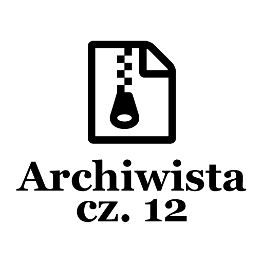

Post archive
Archiwista [cz. 12 - Porządki cd.]

W ciągu tego tygodnia skupiłem się głównie na ustawieniach oraz edytowaniu informacji o projekcie. Podczas pracy nad interfejsem znalazłem sporo wartości tekstowych wpisanych na sztywno. Nie powinno to tak wyglądać, więc dodałem je do słownika, który może w przyszłości posłużyć do przetłumaczenia całego interfejsu aplikacji na inny język. Podczas pracy nad aplikacją napotkałem parę problemów kwestii graficznej podczas stylizacji przycisków w ustawieniach. Zajmę się nimi w następnym tygodniu.
Ustawienia
W zakładce z ustawieniami dodałem możliwość wyczyszczenia kopii zapasowych. Naprawiłem również możliwość wyboru domyślnej ścieżki, w której mają lądować kopie. Dodatkowo zostały dodane trzy przyciski pozwalające przywrócić domyślne ustawienia, zapisać ustawienia oraz przycisk pozwalający anulować wszelkie zmiany. W przyszłości zrobię styl przycisków, który będzie sygnalizował czy jakieś zmiany są do zapisu bądź do odrzucenia. Mechanizm zapisu wywołuje statyczną metodę klasy Storage, która zapisuje wszelkie informacje do pliku. Przycisk anulujący zmiany po prostu wczytuje dane z pliku, dzięki czemu mamy ostatnią wersję ustawień. Domyślne ustawienia są ustawiane poprzez przypisanie nowego obiektu typu UserSettings do zmiennej przechowującej ustawienia użytkownika.
Edytowanie
Jedną z kluczowych funkcjonalności, które pozostały do zrobienia jest możliwość edycji informacji już utworzonych projektów. Funkcjonalność ta okazała się łatwa w implementacji. W tym celu stworzyłem zmienną sygnalizującą czy jesteśmy w trybie edycji oraz zmienną przechowującą projekt przed dokonaniem jakichkolwiek zmian. Gdy użytkownik naciśnie przycisk edycji projektu aplikacja jest ustawiana w tryb edycji. Po czym tekst przycisku dodaj zmieni nazwę na zapisz oraz pojawi się nowy przycisk umożliwiający anulowanie edycji. Przez wykorzystanie przycisku dodającego projekty do listy musiałem zmodernizować metodę, do której był on przypisany. Kiedy metoda stworzy nowy obiekt zawierający nowe informacje zamiast dodawać go do listy projektów sprawdzam czy program jest w trybie edycji, jeżeli tak to uruchamiam metodę SwapEditedProjectInformation, która podmienia informacje projektu na nowe.
private void SwapEditedProjectInformation(Project newProjectItem)
{
var projIndex = Projects.IndexOf(EditedProject);
var oldProjIndex = Storage.Settings.Projects.IndexOf(Projects[projIndex].Project);
Projects[projIndex].Title = Title;
Projects[projIndex].Project = newProjectItem;
Storage.Settings.Projects[oldProjIndex] = newProjectItem;
Storage.Save();
ClearInputFields();
Editing = false;
}Dodatkowo poprawiłem błąd informujący o tym, że tytuł projektu już istnieje w przypadku jego edycji. Po naciśnięciu przycisku anuluj tryb edycji jest włączany oraz pola są czyszczone z wprowadzonych informacji.
Kończąc
Zakładkę z ustawieniami uważam za skończoną, tak samo główną zakładkę aplikacji. Zastanawiam się nad dodaniem dodatkowych przycisków do każdego z projektów. Przyciski miałby by na celu otwieranie folderu, w którym znajdują się kopie bądź pliki źródłowe. Muszę się jeszcze zastanowić czy na pewno taka funkcjonalność się przyda. Ze względu na grono ludzi, dla których jest celowana aplikacja zastanawiam się nad usunięciem zakładki umożliwiającej wysyłanie informacji o błędach. Gdyż użytkownicy będą wiedzieli jak poinformować o tym na githubie bądź moim blogu.
Kolejny tydzień będzie głównie tygodniem stylistycznym, pozostały same wizualne rzeczy do zrobienia. No może oprócz zaawansowanego tworzenia kopii zapasowych, o którym wspominałem w zeszłym tygodniu. Do poprawienia zostały style przycisków w ustawieniach, przesuwanie tekstu ścieżek po ich wybraniu oraz logo aplikacji.
[KodNaGit]